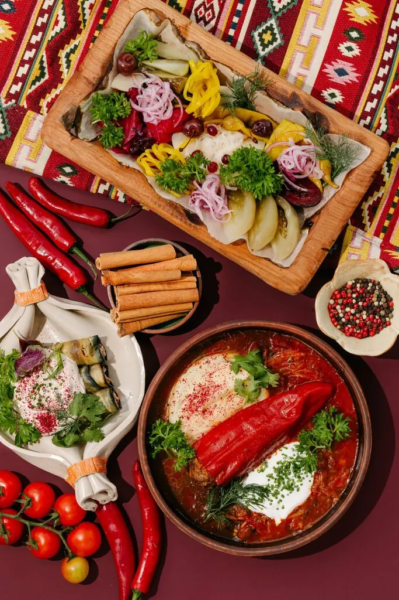
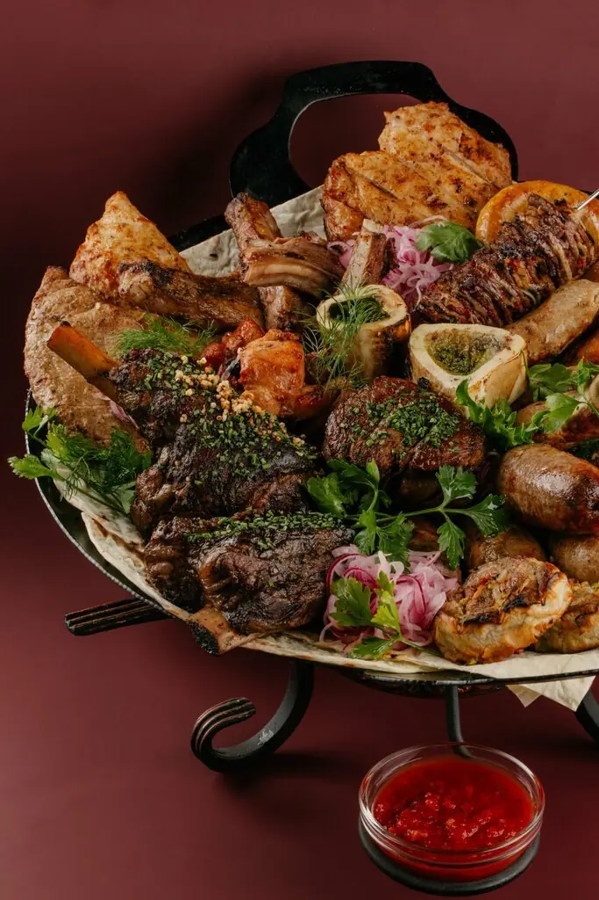
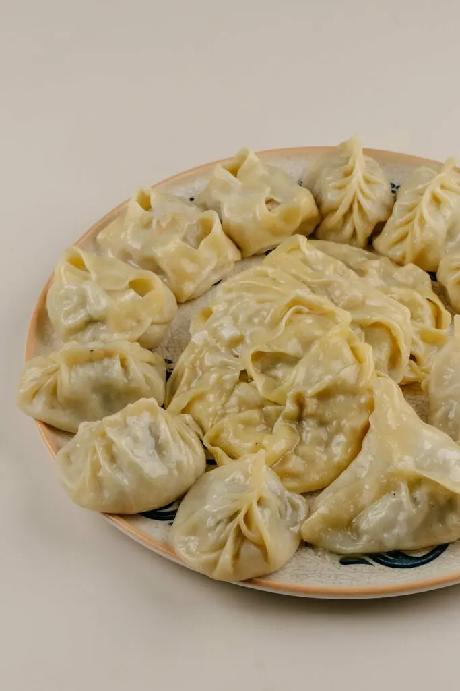
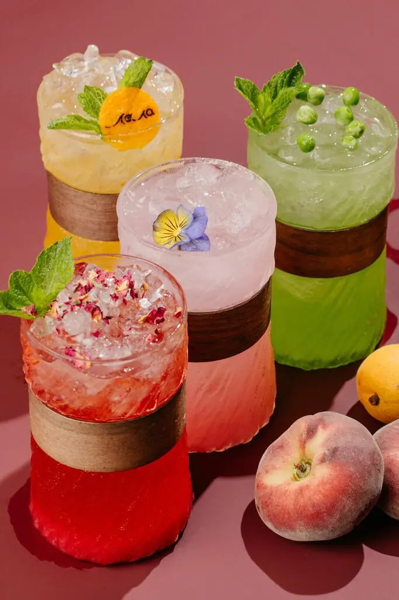
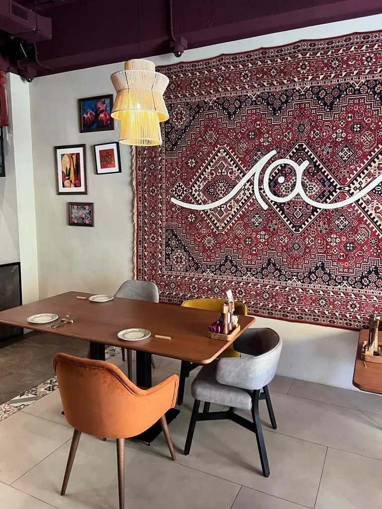

Краснодар+7 989 222-37-22
Лала
«Лала» на Востоке называют тюльпан. Он раскрывается, и внутри зал с коврами, завтраки с девяти утра и зелень из своей теплицы.
5,0 · 163 оценки
С грядки Лалы
Овощи с грядки Лалы550 ₽
Зелень из теплицы550 ₽
Ачучук с сорбетом из томатов620 ₽
Восточные соленья670 ₽
Кавказские сыры990 ₽
Ассорти из трёх видов рыб1 550 ₽
Часть меню с Яндекс Карт, цены уточняйте у официанта.

Букет




Говорят
Очень понравился ресторан. Уютно, атмосферно, вежливый персонал и быстрая подача.Анна
Хорошее заведение, внутри красиво. Спасибо официанту Давиду, обслуживание было очень хорошее.Всеволод Касатчиков
Сервис, еда, атмосфера, всё на высоте.Наталья Рожко